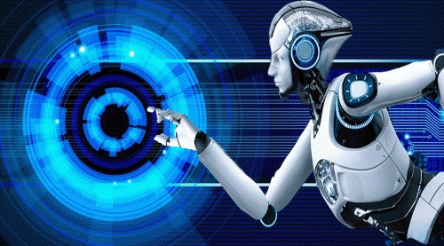

Artificial Intelligence (AI)
links
refers to the simulation of human intelligence in machines that are programmed to think like humans and mimic their actions. The term may also be applied to any machine that exhibits traits associated with a human mind such as learning and problem-solving.
The ideal characteristic of artificial intelligence is its ability to rationalize and take actions that have the best chance of achieving a specific goal.
In today's world, technology is growing very fast, and we are getting in touch with different new technologies day by day.
Here, one of the booming technologies of computer science is Artificial Intelligence which is ready to create a new revolution in the world by making intelligent machines.The Artificial Intelligence is now all around us. It is currently working with a variety of subfields, ranging from general to specific, such as self-driving cars, playing chess, proving theorems, playing music, Painting, etc.
AI is one of the fascinating and universal fields of Computer science which has a great scope in future. AI holds a tendency to cause a machine to work as a human.
Artificial Intelligence is composed of two words Artificial and Intelligence, where Artificial defines "man-made," and intelligence defines "thinking power", hence AI means "a man-made thinking power."
